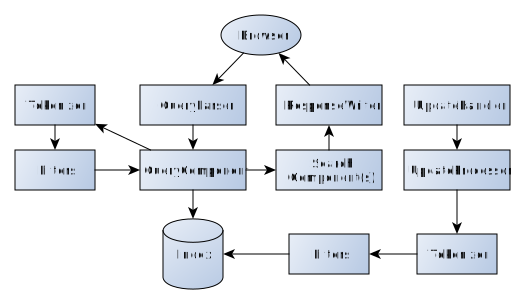

Solr
Search Engine
jyrki.puttonen@symbio.com / @jyrkiput
Overview
Solr is configurable and scalable search engine.
Implemented in Java
Document database
Version 5.5.0 is newest release
Used by Netflix, Disney, eBay, BestBuy
Features
Analyzing
Text is analyzed before it is stored into database.
First the text is tokenized, and then actions are performed for each token.
Analyzers can be defined for searching and indexing
Analyzation
| Action | Word |
|---|---|
| StandardTokenizer | Verokortin |
| LowerCaseFilter | verokortin |
| MorphologyFilter (sukija) | verokortti |
Document information
Document can have multiple fields, which can be analyzed separately
Fields can be used as filter to results, for example by language
Kenttiä voidaan käyttää rajaamaan hakutulosta, esimerkiksi kielen mukaan
Storing of document
| document key | text |
|---|---|
| A | Verokortin palautus tapahtuu |
| B | Verokortti toimitetaan |
Index
| Key | Dokumenti |
|---|---|
| verokortti | A, B |
| palautus | A |
| tapahtua | A |
| toimittaa | B |
Search
Solr contains multiple different queryparsers
After parsing, query is analyzed
The results of analysis if used for fetching documents
Documents are scored and sorted
Other features
- More like this
- Paging
- Grouping, Clustering
Documentation
Apache Solr Reference Guide https://cwiki.apache.org/confluence/display/solr/Apache+Solr+Reference+Guide
Multiple books
Shema
Schema describes the document: field names and types, how they are store and analyzed
Schema is defined in schema.xml
Possible to use API to define schema (Managed Schema)
Shema
Unique Key
id
Unique key is not required, but useful
Needed in following use cases
- Changing documents
- Defining subsets
- Sharing documents with other databases (primary key)
- Changing the identity of document (surrogate key)
- Combining searches
- Sharding
Shema
Defining fields
| name | purpose | value set | default |
|---|---|---|---|
| name | Name of the field | alphanumeric, underscores | - |
| type | Type of the field. Types are defined separately | The type must be defined | - |
| default | Oletusarvo | Kentän tyyppiä vastaava | |
| indexed | Field is indexed and can be used in searches | true/false | true |
| stored | Field is stored and value can be returend | true/false | true |
| multivalued | Can this field have multiple values in document | true/false | false |
| required | Is field required | true/false | false |
| sortMissingFirst, sortMissingLast | Is document without this field sorted first or last | true/false | false |
omitNorms, omitTermFreqAndPositions, omitPositions, termVectors, termPositions, termOffsets, termPayloads...
Dynamic fields
Dynamic field works like static field, the name has wild card
Extremely useful
title_txt_fi, text_txt_fi
Copying fields
Copies fields with different names
Enables indexing of fields in multiple ways
Shema
Defining type
... | Name | Purpose | Value set | default |
|---|---|---|---|
| name | Name of field type | Alphanumerinc, underscores | - |
| class | Class of file (Java) | Solr has a lot of classes | - |
positionIncrementGap, autoGeneratePhraseQueries, docValuesFormat, postingsFormat
Defaults for field definitions.
Schema
Defining analysis
Analysis inspects inputs during indexing and searching
Text is tokenied, tokens are modified, remove and created
Analysis can be done with one class, or with pipeline of Tokenizer and Filters
Can be defined separately for indexing and searhing
Schema
Defining analysis
Schema
What happens
Document A: Verokortin ja verotodistuksen palautus tapahtuu
StandardTokenizerFactory
"Verokortin", "ja", "verotodistuksen", "palautus", "tapahtuu"
LowerCaseFilterFactory
"verokortin", "ja", "verotodistuksen", "palautus", "tapahtuu"
StopFilterFactory
"verokortin", "verotodistuksen", "palautus", "tapahtuu"
MalagaMorphologyFilterFactory
"verokortti", "verotodistus", "palautus", "tapahtua"
Schema
Generated index
| key | document |
|---|---|
| verokortti | A |
| verotodistus | A |
| palautus | A |
| tapahtua | A |
Schema
Defining analysis
Solr has a lot of tokenizers and filters
New ones can be defined
Few examples:
- Edge N-Gram Filter
- Synonym Filter
- Phonetic Filter
Indexing
Documents can be uploaded to Solr with different ways
- Natiivikirjastot (Java, javascript, python, php, perl...)
- XML tiedostot
- Solr Cell with Tika
Indexing is done with UpdateHandler and UpdateProcessors
UpdateProcessors can add, modify and remove fields or reject whole document
Most of features in Solr are implemented with UpdateProcessors
One of the processors does the analysis

Haku
Query is parsed with QueryParser
Query is analyzed
Query can be targeted to given fields
Fields can have weights
Documents are scored

QueryParsers
Solr has multiple queryparser with different features
QueryParsers are tweaked with parameters, "name=value"
Common query parameters
| Name | Description |
|---|---|
| defType | Which parser is used, defaults to "lucene" |
| sort | How results are sorted. Results can be sorted by score of by fields (limitations apply) |
| start | which document is first returned, used for paging |
| rows | How many documents are returned |
| fq | filter query. Defines a query that restricts results, ie. "fq=lang:fi". Can be defined multiple times |
| fl | Returned fields, can contain functions etc |
| wt | How the result is returned (JSON, XML, Velocity) |
| debug | debugging, possible values query, timing, results ja all (tai true) |
Standard Query Parser
Uses lucene query language
Parameters
| Name | Description |
|---|---|
| q | Query |
| q.op | How multiple queries are handled, AND or OR |
| df | Which field is searched by default |
examples:
- jakarta
- te?t -> test, text
- test* -> tester, testing
- "jakarta apache"~10 -> jakarta sana toinen apache
- roam~ -> roam, foam, foams, roams
- roam~1 -> roam, foam, roams
- title:"The Right Way" AND text:go
- jakarta^4 +apache
DisMax Query Parser
Simple queries without complex syntax. Accepts almost anything without errors
Support "grouping of phrases", +mandatory and -removing words, no wildcards
Tukee "sanojen ryhmiä", +pakollisia ja -poistavia sanoja. Ei villikortteja
Maximum Disjunction, creates subqueries and scores from them
| Name | Description |
|---|---|
| q | Query |
| q.alt | Query if "q" is not used. Parsed with "lucene" by default |
| qf | Which fields are used, qf="fieldOne^2.3 fieldTwo fieldThree^0.4" |
| mm | (Minimum Match) How many of terms in query must be found, can be defined in multiple ways |
| pf | Phrase Fields, boosts fields where queried words are near each other, pf="fieldOne^2.3 fieldThree^0.4" |
| ps | Phrase slop, Distance of words in fields defined with "pf" |
| qs | Distance of words in fields defined in query |
| tie | How the values of fields are summed. When this is 0.0, only highest scoring field is counted, when 1.0, all of them |
| bq | Boost Query. Can have multiple. Example: bq=date:[NOW/DAY-1YEAR TO NOW/DAY] |
| bf | Boost functions. Example, newest first: "bf=recip(rord(creationDate),1,1000,1000)" |
recip(rord(creationDate),1,1000,1000)
recip(x,m,a,b) implementing a/(m*x+b) where m,a,b are constants, and x is any arbitrarily complex function.
When a and b are equal, and x>=0, this function has a maximum value of 1 that drops as x increases. Increasing the value of a and b together results in a movement of the entire function to a flatter part of the curve.

Extended DisMax Query Parser
Extended version of DisMax
Lucene query language can be used, knows how to handle syntax errors
Parameters
| Name | Description |
|---|---|
| boost | A multivalued list of strings parsed as queries with scores multiplied by the score from the main query for all matching documents. |
| lowercaseOperators | if "AND" and "OR" can be used in lower case |
| pf2 | Like pf, using bigrams instead single words, "one two", "two three" |
| pf3 | Kuten pf, using trigrams instead single words "one two three" (trigram) |
| ps2, ps3 | Phrase slop for pf2/pf3 |
| stopwords | if stopwords are bypassed, true/false |
| uf | What fields can the end user use in query |
Local variables
Queries (q, fq, bq) can have local variables
- q={!q.op=AND df=title}solr rocks
- fq={!type=dismax qf=myfield}solr rocks
Paramter "v" is used as value
can be used as reference
- q={!type=dismax qf=myfield v=$qq}&qq=solr rocks
Extremely powerful
Response Writer
Response Writer, well, writes the response
Defined with "wt"
Available: xml, json, php, ruby, php, csv
velocity is special, uses velocity templates
RequestHandler
RequestHandler handles requests coming to Solr
Different types
- SearchHandler
- UpdateRequestHandler
- ShardHandler
- RealTime Get
- Index Replication
- ping
SearchHandler
explicit
10
RequestHandler, takes all parameters
SearchHandler
explicit
10
inStock:true
name description
Has defaults values, appends "fq" and forces "fl"
SearchComponent
SearchComponent is a feature in search, like faceting, highlighting
Each component has their own parameters, and adds parts to results
Using of component might require changes in indexing
SearchComponentit rekisteröidään RequestHandleriin.
SearchComponents are registered with RequestHandler
SearchComponent
Defaults for RequestHandler
| name | Class |
|---|---|
| query | solr.QueryComponent |
| facet | solr.FacetComponent |
| mlt | solr.MoreLikeThisComponent |
| highlight | solr.HighlightComponent |
| stats | solr.StatsComponent |
| debug | solr.DebugComponent |
| expand | solr.ExpandComponent |
Defaults can be overwritten
Registering of SearchComponent
SearchComponents are registered with RequestHandler, defaults are not used anymore
true
false
terms
InitParams
RequestHandler parameters can be defined with initParams
_text_
Used when path is matching, or explicitly defined
Summary

Summary
Extremely flexible, and therefore, complex
No sane defaults
"Rightness" of results is not absolute.